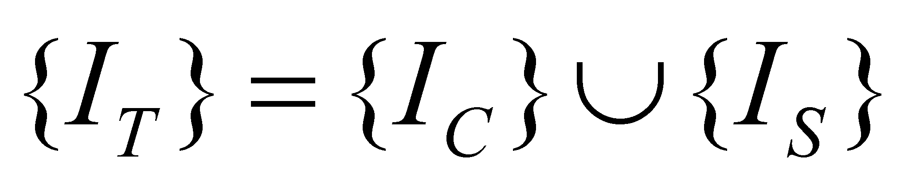
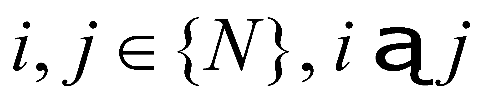
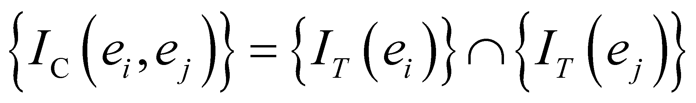

|
|
|
We have noticed from the previous sections that a system is a complex object, it is therefore made-up from a systemic set of other objects. The total amount of the properties which are associated to this set of objects represents the total information associated to them by IPS which perceives the system.
According to the aspects established so far, this information has two components:
Specific information (synonym - differential) {IS}, which consists in the set of the attributes which are characteristic to each system element, attributes which make that particular element to be univocally determined (unmistakable);
Common information {IC}, made-up from the set of those attributes which belong to all the elements of a given system.
Therefore, the total information {IT} associated to a system element is:
 (9.4.5.1)
As for a couple of elements {ei, ej} where , it may be written that:
 (9.4.5.2)
Namely, the common information belonging to a couple of elements within the system is the intersection of the total information set of the two elements.
Comment 9.4.5.1: The semantic separation (splitting, isolation, discrimination) of an abstract object from other abstract objects is made by means of a definition process, during which we are dealing with the assignment of the name agreed for the collection of attributes and processes which are characteristic to the object (collection given by the relation 9.4.5.1). The definition is mostly made by means of the method named as proximate kind + specific difference. According to the terms which are specific to the objectual philosophy, the proximate kind is an abstract object which exchanges common non-zero information with the object about to be defined (intersection of the semantic domains given by the relation 9.4.5.2 is non-zero). The information specific to the defined object shall be subsequently associated to this reference information, and this association is achieved even by means of the definition process.
Copyright © 2006-2011 Aurel Rusu. All rights reserved.